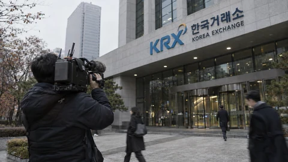
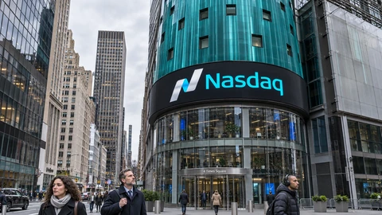
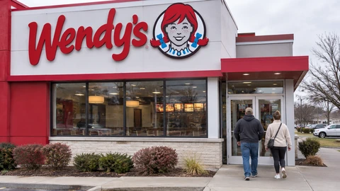
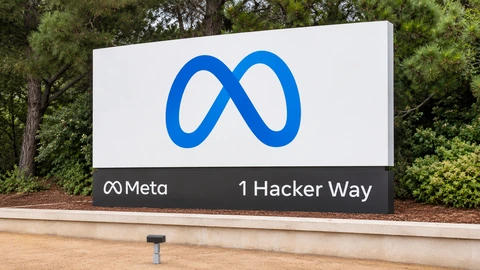

Market Analysis
Asian Markets Drop as US Chip Selloff Spreads, Then Wall Street Stabilizes
Japan and South Korea bore the brunt of Friday's global technology retreat, while American shares ended a volatile session mostly higher.

Japan and South Korea bore the brunt of Friday's global technology retreat, while American shares ended a volatile session mostly higher.
The Nasdaq fell 3.4% for the week and the S&P 500 lost 2.7% despite a Friday rebound, as investors weighed jobs data, AI valuations and next week's CPI.

The University of Michigan's preliminary November index rose three points, while inflation expectations eased and worries about living costs remained widespread.

Global equity funds added $38.63 billion in the week to November 4, even as technology shares and AI spending worries unsettled markets.
October hiring exceeded expectations, but a rise in involuntary part-time work complicates the message for households and the Federal Reserve.
Third-quarter revenue rose 4.5%, but operating profit fell 15.9%. Premium demand and fuel hedges have cushioned the pressure without eliminating it.

A sharp decline in semiconductor shares drove Wall Street lower on November 5, bringing financing and project-delivery risks back into focus.

U.S. same-restaurant sales fell 5.7% in the third quarter. A proposed purchase of up to 163 restaurants remains conditional as Wendy’s changes its breakfast and operator strategy.
Higher freight rates lifted quarterly earnings and the annual forecast. Investors must assess how much of that improvement can survive a normalization of shipping capacity.
Toyota lifted its annual operating-profit forecast to ¥3.9 trillion. A stronger operating quarter and a larger buyback contrast with a decline in quarterly net income.

The reported euro bond sale follows a $15 billion U.S. offering. Meta is widening its funding base as heavy capital spending puts pressure on free cash flow.
October’s ISM services index fell to 54.5, while the prices gauge stayed at 73.0. Slower orders and strained household purchasing power leave a difficult mix for monetary policy.
Reporting and explainers from the full archive.